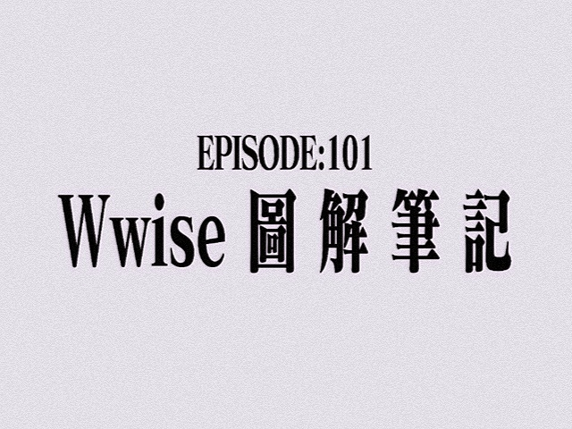

Documentation · Wwise
Wwise_101_非官方汉化文档
— 写给游戏音频初学者的学习笔记

📖 非官方汉化文档 · 持续更新中
⚠️ 本项目为个人学习笔记与非官方整理，不代表官方观点。
部分内容会包含主观理解与项目经验。
章节可能长期更新、重构、推翻重写。
部分内容会包含主观理解与项目经验。
章节可能长期更新、重构、推翻重写。
核心理念
把工具打磨好，是为了给创意留出更多的空间。
关于风格
- 不是 手册抄写
- 不是 官方文档复读
- 是 一个业余声音设计师 / evangelion 厨的 实战心法 + 脑内弹幕
每一章会围绕一个或者几个核心操作或概念展开，配上：
- 迷之引用（来自动画、meme）
- "要是有人能早告诉我就好了"的 tips
关于这份笔记
这份笔记可能接近：
"一个想要进入游戏音频行业的人，对 Wwise 的拆解与理解。"
它会包含：
- Wwise 基础与核心逻辑
- 行业内的实际项目组织方式
- Event / RTPC / Switch / State 等系统设计
- 音频资源管理
- 性能与优化
- 部分音频行业理解
章节地图
01
Wwise、袭来
逃げちゃダメだ…
02
陌生的、天花板
我要当Wwise高手，zdjd？
03
在界面之彼方
A.T.力场全开
04
只要微笑就好了
——那么你是为了什么驾驶Wwise
05
在静止的黑暗中
黑雨袭来之时，NERV停转之日！
06
I WANT TO PLAY A CUBE
Make your choice.
07
打钩打钩叫叫叫
听通机听通机,出示出示建库码~
08
瞬间、声声相印
两只豪猪到底要距离多远才能不被冻死呢
09
Let master master mastering.
Buffalo buffalo buffalo
10
REI Ⅰ
/
11
ACOUSTICS_DIVER
/
12
REI Ⅱ
You Can (Not) Advance
13
REI Ⅲ
不是你的人偶
14
结束的"4"界
THRICE UPON A TIME.
15
又幻想了……
被选中制作DEMO的Sound Designer
16
在视窗中心呼唤"优化"的野兽
哦咩得多~（鼓掌）（鼓掌）
终章
我要、退出这个行业
Jam a man of fortune,and J must seek my fortune.——xQc
18
考验，最后一战
刻意，这也言詹？
目前进度
已完成
全书骨架
进行中
逐章填充
进行中
工程示例
进行中
赞助特典（？
计划中
English Version（TBD）
💡 对这份笔记感兴趣？欢迎 联系我 交流讨论。